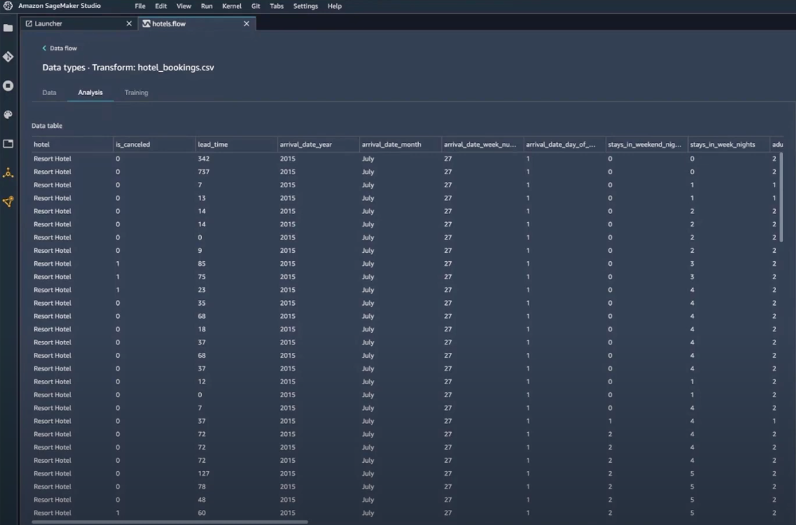
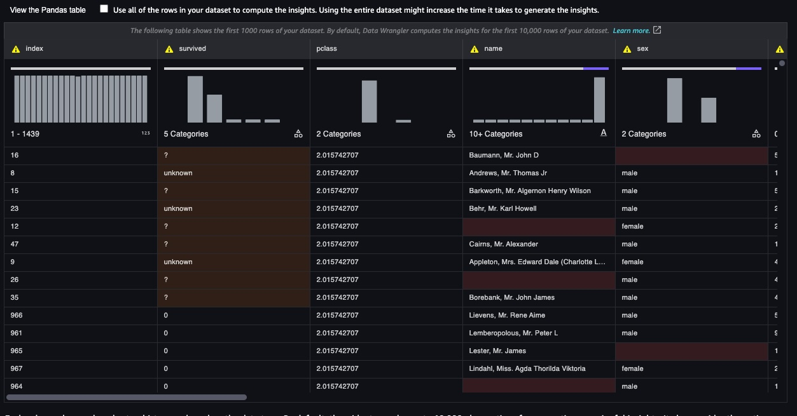
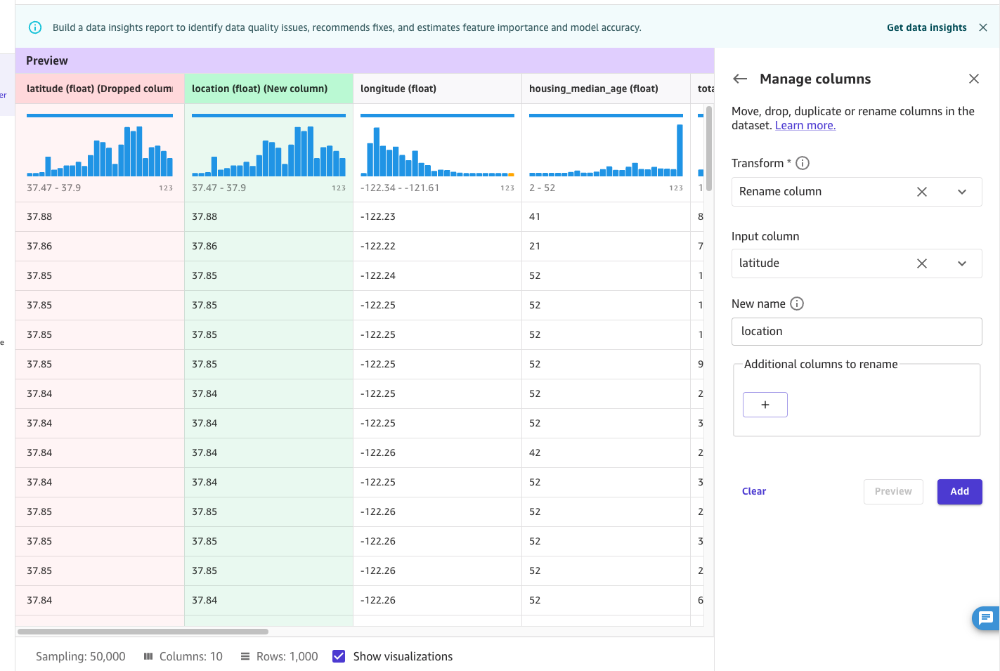
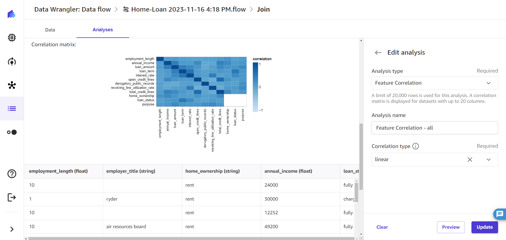
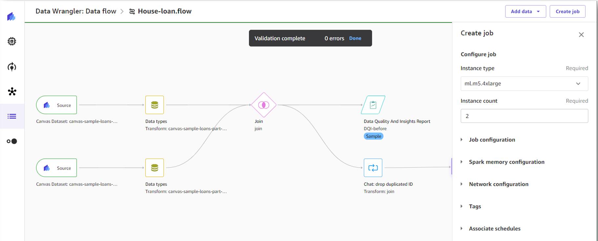
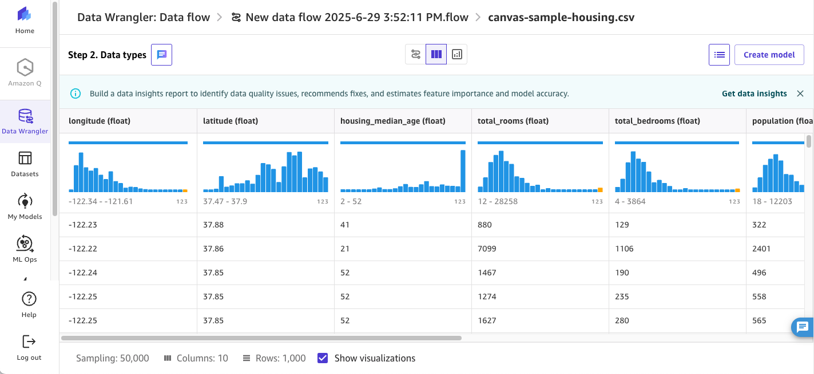
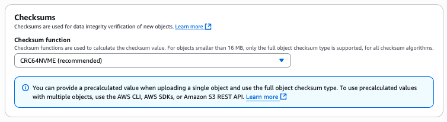
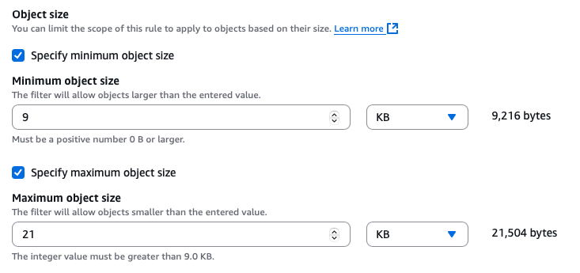

Data-Intensive Frontend at AWS
Case Study #1: Dynamic Column-Based Data Insight Preview

Before: no per-column visualization

After: per-column D3 chart preview
Context
SageMaker Data Wrangler needed to show per-column data visualizations in an MUI DataGrid — each column rendering its own D3 chart.
Problem
All D3 visualizations initialized at once on page load. With N columns, render cost scaled O(N) — the more columns in the dataset, the longer the freeze.
Solution
Calculated visible column range from current scroll position and column widths, maintaining a dynamic list of in-viewport columns. Each D3 chart is wrapped in React.memo and only initializes when its column enters the visible range — deferring all off-screen rendering.
Result
Initial load reduced from O(N) to O(1). This pattern became the foundation for solving the Data Quality Report freeze in Case 2.
Case Study #2: Full Data Wrangler Port to SageMaker Canvas
Context
Migrating Data Wrangler — a Jupyter notebook extension for ML data prep — into Canvas, a standalone application. (re:Invent 2023)

Operator preview in Canvas

Data Quality Report in Canvas
Problem
The migration surfaced compounding issues: component style mismatches between legacy and Canvas kept slipping through QA; the Data Quality Report froze on 100+ column datasets; bundle size had ballooned to 75MB with orphaned legacy code; stale API calls fired for unchanged data; and nested re-renders degraded runtime responsiveness.

Data preparation pipeline in Canvas
Solution
Style inconsistencies — Introduced Storybook with a legacy/Canvas style toggle, enabling visual comparison without a full build — cutting QA cycle time in half.
Data Quality Report freeze — Applied the scroll-position-based visibility calculation from Case 1 to vertical scroll, deferring D3 initialization for sections outside the visible range.
Bundle bloat — Analyzed with webpack-bundle-analyzer, removed orphaned modules and dead code, consolidated duplicate dependencies. 75MB → 44MB (41% reduction).
Stale API calls — Identified and eliminated legacy API calls no longer relevant in Canvas. 89% reduction.
Runtime latency — Profiled with React Profiler, identified cascading re-renders from unstable references. Applied React.memo on visualization components, useCallback for event handlers, and useMemo for derived data to cut unnecessary render cycles. Response time 2.8s → 0.8s (71% reduction).

Data Insight Preview in Canvas
Result
Shipped at re:Invent 2023. Test coverage 78% → 97% including Cypress drag-and-drop E2E tests. 97% render time reduction on Data Insights page (10.5s → 0.4s).
Also at AWS

S3 Console: checksum selection

S3 Console: lifecycle object size filter
Shipped Lifecycle Filters and client-side checksum support for S3 Console — AWS's most-used service.